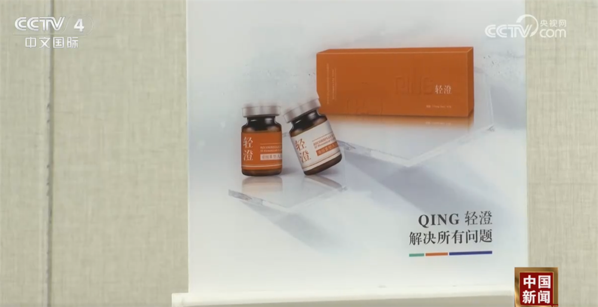
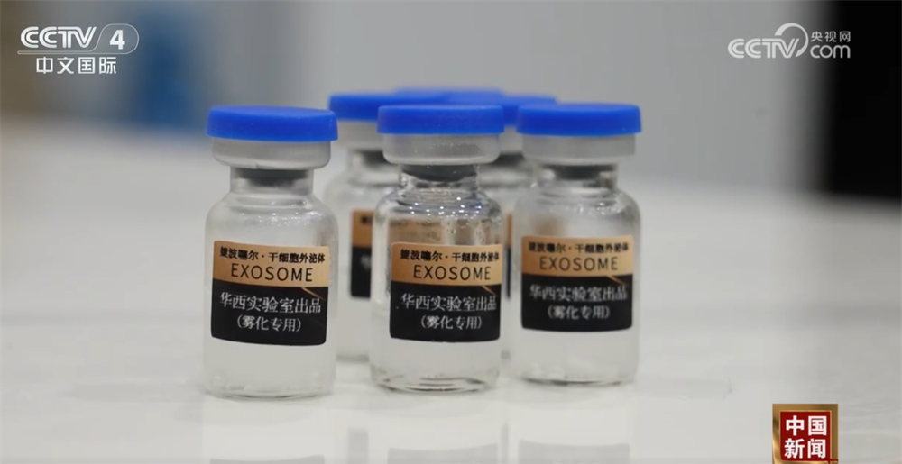

央视网消息：3·15晚会曝光了来源不明的非法外泌体制剂，被用于美容抗衰、治疗关节炎和癫痫，这不仅扰乱了正常的科研秩序与监管环境，也为国家生物安全、基因安全埋下隐患。国家市场监管总局和天津市有关部门第一时间派出执法力量，对涉事商家进行执法调查。
记者探访了在3·15晚会中被曝光的生产销售所谓外泌体抗衰产品的灏麟生物公司，在现场，来自当地市场监管、药监、卫健、公安等部门的执法力量正在对办公现场进行控制和调查。
在经营现场，执法人员发现了3·15晚会曝光的“轻澄”以及其系列产品。在执法人员的询问中，销售人员表示，产品中并不含有“外泌体”，而执法人员现场调取的宣传文件上则标明了“外泌体”等字样。

经现场检查和初步判断，天津市市场监管委执法人员发现企业涉嫌夸大宣传、虚假宣传的一些违法行为。
执法人员在现场调取的销售记录及合同文件显示，2025年灏麟公司已累计向天津市数十位个人、公司及医疗机构销售“轻”系列3种产品超三千盒。执法部门查封扣押了该公司一系列产品和相关记录，将进一步调查核实产品生产、检验、销售等情况。
除了在天津调查“外泌体”相关涉事企业，执法部门还赶赴其他地区，对向消费者违法销售、注射“外泌体”的相关企业进行了突击检查。
记者跟随执法人员抵达被3·15晚会曝光、涉嫌非法销售并注射“外泌体”的婕波噻尔生物科技有限公司后发现，婕波噻尔生物科技有限公司大门紧闭，早已人去楼空。随后执法人员在进一步核查中发现了新的线索，找到了该公司的注册地址。执法人员在这里发现了一间刚刚建成的生物实验室，里面是整套崭新的设备，实验台、冷藏柜一应俱全。

除了现场查获的实物，执法人员还在办公区找到了与消费者签署的“使用生物制剂知情同意书”。
除了签署的“使用生物制剂知情同意书”，执法人员在现场还找到了多份为客户提供定制化产品使用的回输细胞体检方案。
这些写在合同里的明码标价是一项项违规操作的价格，是条条的健康风险。针对此次3·15晚会曝光的外泌体非法生产注射问题，执法部门已明确表态，将以“零容忍”的态度从严从快查处，全链条打击此类危害群众健康的违法行为。